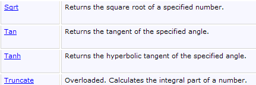
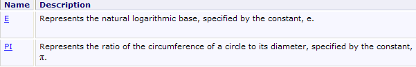

3. The Basics of the C# Language
3.1. Introduction
We will first treat C# as a classic programming language. We will cover classes later. In a program, there are two things:
- data
- the instructions that manipulate them
We generally strive to separate data from instructions:
 |
3.2. C# Data
C# uses the following data types:
- integers
- floating-point numbers
- decimal numbers
- characters and strings
- Booleans
- objects
3.2.1. Predefined data types
C# type | .NET type | Data represented | Suffix of literal values | Encoding | Value range |
Char (S) | character | 2 bytes | Unicode character (UTF-16) | ||
String (C) | character string | reference to a sequence of Unicode characters | |||
Int32 (S) | integer | 4 bytes | [-2³¹ , 2³¹-1] [–2147483648, 2147483647] | ||
UInt32 (S) | .. | U | 4 bytes | [0, 2³²-1] [0, 4294967295] | |
Int64 (S) | .. | L | 8 bytes | [-263, 263 -1] [–9223372036854775808, 9223372036854775807] | |
UInt64 (S) | .. | UL | 8 bytes | [0, 264 -1] [0, 18446744073709551615] | |
.. | 1 byte | [-27, 27] [-128, +127] | |||
Byte(s) | .. | 1 byte | [0, 28 -1] [0, 255] | ||
Int16 (S) | .. | 2 bytes | [-215, 215-1] [-32768, 32767] | ||
UInt16 (S) | .. | 2 bytes | [0, 216-1] [0,65535] | ||
Single (S) | real number | F | 4 bytes | [1.5 × 10⁻⁴⁵, 3.4 × 10³⁸] in absolute value | |
Double (S) | .. | D | 8 bytes | [-1.7 × 10³⁰⁸, 1.7 × 10³⁰⁸] in absolute value | |
Decimal (S) | decimal number | M | 16 bytes | [1.0 10⁻²⁸, 7.9 10²⁸] in absolute value with 28 significant digits | |
Boolean (S) | .. | 1 byte | true, false | ||
Object (C) | object reference | object reference |
Above, we have listed C# types alongside their equivalent .NET types, with the comment (S) if the type is a struct and (C) if the type is a class. We see that there are two possible types for a 32-bit integer: int and Int32. The int type is a C# type. Int32 is a structure belonging to the System namespace. Its full name is therefore System.Int32. The int type is a C# alias that refers to the .NET System.Int32 structure. Similarly, the C# string type is an alias for the .NET System.String type. System.String is a class, not a structure. The two concepts are similar, but with the following fundamental difference:
- a variable of type Structure is manipulated via its value
- a variable of type Class is manipulated via its address (reference in object-oriented language).
Both a structure and a class are complex types with attributes and methods. Thus, we can write:
In the code above, the literal 3 is by default of type C# int, and thus of type .NET System.Int32. This structure has a GetType() method that returns an object encapsulating the characteristics of the System.Int32 data type. Among these, the FullName property returns the full name of the type. We can therefore see that the literal 3 is a more complex object than it appears at first glance.
Here is a program illustrating these various points:
using System;
namespace Chap1 {
class P00 {
static void Main(string[] args) {
// example 1
int ent = 2;
float fl = 10.5F;
double d = -4.6;
string s = "test";
uint ui = 5;
long l = 1000;
ulong ul = 1001;
byte byte = 5;
short sh = -4;
ushort ush = 10;
decimal dec = 10.67M;
bool b = true;
Console.WriteLine("Type of ent[{1}]: [{0},{2}]", ent.GetType().FullName, ent, sizeof(int));
Console.WriteLine("Type of fl[{1}]: [{0},{2}]", fl.GetType().FullName, fl, sizeof(float));
Console.WriteLine("Type of d[{1}]: [{0},{2}]", d.GetType().FullName, d, sizeof(double));
Console.WriteLine("Type of s[{1}]: [{0}]", s.GetType().FullName, s);
Console.WriteLine("Type of ui[{1}]: [{0},{2}]", ui.GetType().FullName, ui, sizeof(uint));
Console.WriteLine("Type of l[{1}]: [{0},{2}]", l.GetType().FullName, l, sizeof(long));
Console.WriteLine("Type of ul[{1}]: [{0},{2}]", ul.GetType().FullName, ul, sizeof(ulong));
Console.WriteLine("Type of b[{1}] : [{0},{2}]", byte.GetType().FullName, byte, sizeof(byte));
Console.WriteLine("Type of sh[{1}]: [{0},{2}]", sh.GetType().FullName, sh, sizeof(short));
Console.WriteLine("Type of ush[{1}]: [{0},{2}]", ush.GetType().FullName, ush, sizeof(ushort));
Console.WriteLine("Type of dec[{1}]: [{0},{2}]", dec.GetType().FullName, dec, sizeof(decimal));
Console.WriteLine("Type of b[{1}]: [{0},{2}]", b.GetType().FullName, b, sizeof(bool));
}
}
}
- line 7: declaration of an integer ent
- line 19: the type of a variable v can be obtained via v.GetType().FullName. The size of a structure S can be obtained via sizeof(S). The statement Console.WriteLine("... {0} ... {1} ...", param0, param1, ...) prints " " on the screen, replacing each {i} with the value of the parami expression.
- Line 22: Since the string type refers to a class and not a structure, the sizeof operator cannot be used.
Here is the result of the execution:
The display shows .NET types, not C# aliases.
3.2.2. Literal data notation
145, -7, 0xFF (hexadecimal) | |
100000L | |
134.789, -45E-18 (-45 × 10⁻¹⁸) | |
134.789F, -45E-18F (-45 × 10⁻¹⁸) | |
100000M | |
'A', 'b' | |
"today" "c:\\chap1\\paragraph3" @"c:\chap1\paragraph3" | |
true, false | |
new DateTime(1954,10,13) (year, month, day) for 10/13/1954 |
Note the two string literals: "c:\\chap1\\paragraph3" and @"c:\chap1\paragraph3". In string literals, the \ character is interpreted. Thus, "\n" represents the end-of-line character and not the sequence of the two characters \ and n. If you wanted that sequence, you would have to write "\\n", where the sequence \\ is interpreted as a single character \. You could also write @"\n" to get the same result. The syntax @"text" requires that text be taken exactly as it is written. This is sometimes called a verbatim string.
3.2.3. Data Declaration
3.2.3.1. Role of declarations
A program manipulates data characterized by a name and a type. This data is stored in memory. When the program is compiled, the compiler assigns each piece of data a memory location characterized by an address and a size. It does this using the declarations made by the programmer.
Furthermore, these declarations allow the compiler to detect programming errors. Thus, the operation
x=x*2;
will be declared invalid if x is a string, for example.
3.2.3.2. Declaring Constants
The syntax for declaring a constant is as follows:
For example:
Why declare constants?
- The program will be easier to read if the constant is given a meaningful name:
- Modifying the program will be easier if the "constant" needs to be changed. So in the previous case, if the VAT rate changes to 33%, the only modification needed will be to change the statement defining its value:
If we had used 0.186 explicitly in the program, we would then have to modify numerous statements.
3.2.3.3. Variable Declaration
A variable is identified by a name and refers to a data type. C# distinguishes between uppercase and lowercase letters. Thus, the variables FIN and fin are different.
Variables can be initialized when they are declared. The syntax for declaring one or more variables is:
where Type_identifier is a predefined type or a type defined by the programmer. Optionally, a variable can be initialized at the same time as it is declared.
You can also omit the exact type of a variable by using the keyword var instead of Type_identifier:
The var keyword does not mean that the variables do not have a specific type. The variable variablei has the type of the value valuei assigned to it. Initialization is mandatory here so that the compiler can deduce the variable’s type.
Here is an example:
using System;
namespace Chap1 {
class P00 {
static void Main(string[] args) {
int i = 2;
Console.WriteLine("Type of int i=2: {0},{1}", i.GetType().Name, i.GetType().FullName);
var j = 3;
Console.WriteLine("Type of var j=3: {0},{1}", j.GetType().Name, j.GetType().FullName);
var today = DateTime.Now;
Console.WriteLine("Type of var today: {0},{1}", today.GetType().Name, today.GetType().FullName);
}
}
}
- Line 6: an explicitly typed variable
- line 7: (data).GetType().Name is the short name of (data), (data).GetType().FullName is the full name of (data)
- line 8: an implicitly typed data type. Because 3 is of type int, j will be of type int.
- Line 10: Implicitly typed data. Since DateTime.Now is of type DateTime, today will be of type DateTime.
At runtime, we get the following result:
A variable implicitly typed by the var keyword cannot subsequently change its type. Thus, we could not write the following line after line 10 of the code:
var today = "today";
We will see later that it is possible to declare a type "on the fly" in an expression. This is then an anonymous type, a type to which the user has not given a name. The compiler will give a name to this new type. If data of an anonymous type must be assigned to a variable, the only way to declare it is to use the var keyword.
3.2.4. Conversions between numbers and strings
number.ToString() | |
int.Parse(string) or System.Int32.Parse | |
long.Parse(string) or System.Int64.Parse | |
double.Parse(string) or System.Double.Parse(string) | |
float.Parse(string) or System.Float.Parse(string) |
Converting a string to a number may fail if the string does not represent a valid number. This results in a fatal error called an exception. This error can be handled by the following try/catch block:
try{
call to the function likely to generate the exception
} catch (Exception e){
handle the exception e
}
next statement
If the function does not throw an exception, we proceed to the next statement; otherwise, we enter the body of the catch clause and then proceed to the next statement. We will return to exception handling later. Here is a program demonstrating some techniques for converting between numbers and strings. In this example, the function displays the value of its parameter on the screen. Thus, Display(S) writes the value of S to the screen, where S is of type string.
using System;
namespace Chap1 {
class P01 {
static void Main(string[] args) {
// data
const int i = 10;
const long l = 100000;
const float f = 45.78F;
double d = -14.98;
// number --> string
display(i.ToString());
print(l.ToString());
display(f.ToString());
display(d.ToString());
//boolean --> string
const bool b = false;
display(b.ToString());
// string --> int
int i1;
i1 = int.Parse("10");
display(i1.ToString());
try {
i1 = int.Parse("10.67");
display(i1.ToString());
} catch (Exception e) {
display("Error: " + e.Message);
}
// string --> long
long l1;
l1 = long.Parse("100");
display(l1.ToString());
try {
l1 = long.Parse("10.675");
display(l1.ToString());
} catch (Exception e) {
display("Error: " + e.Message);
}
// string --> double
double d1;
d1 = double.Parse("100.87");
display(d1.ToString());
try {
d1 = double.Parse("abcd");
display(d1.ToString());
} catch (Exception e) {
display("Error: " + e.Message);
}
// string --> float
float f1;
f1 = float.Parse("100.87");
display(f1.ToString());
try {
d1 = float.Parse("abcd");
display(f1.ToString());
} catch (Exception e) {
display("Error: " + e.Message);
}
}// end of main
public static void display(string S) {
Console.Out.WriteLine("S={0}", S);
}
}// end class
}
Lines 30–32 handle any exceptions that may occur. e.Message is the error message associated with the exception e.
The results obtained are as follows:
Note that real numbers in string form must use a comma, not a decimal point. Thus, we write
but
3.2.5. Data arrays
A C# array is an object that allows data of the same type to be grouped under a single identifier. It is declared as follows:
n is the number of elements the array can contain. The syntax Array[i] refers to the element at index i, where i is in the range [0, n-1]. Any reference to Array[i] where i is not in the range [0, n-1] will throw an exception. An array can be initialized at the same time it is declared:
or more simply:
Arrays have a Length property, which is the number of elements in the array.
A two-dimensional array can be declared as follows:
Type[,] array = new Type[n, m];
where n is the number of rows and m is the number of columns. The syntax Array[i,j] refers to element j in row i of the array. A two-dimensional array can also be initialized at the same time it is declared:
or more simply:
The number of elements in each dimension can be obtained using the GetLength(i) method, where i=0 represents the dimension corresponding to the first index, i=1 the dimension corresponding to the second index, …
The total number of dimensions is obtained using the Rank property, and the total number of elements using the Length property.
An array of arrays is declared as follows:
Type[][] array = new Type[n][];
The declaration above creates an array of n rows. Each element array[i] is a one-dimensional array reference. These array[i] references are not initialized in the declaration above. Their value is the null reference.
The example below illustrates the creation of an array of arrays:
// an array of arrays
string[][] names = new string[3][];
for (int i = 0; i < names.Length; i++) {
names[i] = new string[i + 1];
}//for
// initialization
for (int i = 0; i < names.Length; i++) {
for (int j = 0; j < names[i].Length; j++) {
names[i][j] = "name" + i + j;
}//for j
}//for i
- Line 2: An array `names` of 3 elements of type `string[][]`. Each element is an array pointer (an object reference) whose elements are of type `string[]`.
- lines 3–5: the 3 elements of the names array are initialized. Each now “points” to an array of elements of type string[]. names[i][j] is the jth element of the array of type string[] referenced by names[i].
- Line 9: Initialization of the element names[i][j] inside a double loop. Here, names[i] is an array of i+1 elements. Since names[i] is an array, names[i].Length is its number of elements.
Here is an example combining the three types of arrays we have just presented:
using System;
namespace Chap1 {
// arrays
using System;
// test class
public class P02 {
public static void Main() {
// a 1-dimensional array initialized
int[] integers = new int[] { 0, 10, 20, 30 };
for (int i = 0; i < integers.Length; i++) {
Console.Out.WriteLine("integers[{0}]={1}", i, integers[i]);
}//for
// an initialized 2-dimensional array
double[,] reals = new double[,] { { 0.5, 1.7 }, { 8.4, -6 } };
for (int i = 0; i < reals.GetLength(0); i++) {
for (int j = 0; j < reals.GetLength(1); j++) {
Console.Out.WriteLine("reals[{0},{1}]={2}", i, j, reals[i, j]);
}//for j
}//for i
// an array of arrays
string[][] names = new string[3][];
for (int i = 0; i < names.Length; i++) {
names[i] = new string[i + 1];
}//for
// initialization
for (int i = 0; i < names.Length; i++) {
for (int j = 0; j < names[i].Length; j++) {
names[i][j] = "name" + i + j;
}//for j
}//for i
// display
for (int i = 0; i < names.Length; i++) {
for (int j = 0; j < names[i].Length; j++) {
Console.Out.WriteLine("names[{0}][{1}]={2}", i, j, names[i][j]);
}//for j
}//for i
}//Main
}//class
}//namespace
When executed, we get the following results:
3.3. Basic C# statements
We distinguish between
1 the basic instructions executed by the computer.
2 instructions that control the flow of the program.
Basic instructions become clear when considering the structure of a microcomputer and its peripherals.
 |
-
Reading information from the keyboard
-
processing information
-
Writing information to the screen
3.3.1. Writing to the screen
There are various instructions for writing to the screen:
where expression is any data type that can be converted to a string to be displayed on the screen. All C# or .NET objects have a ToString() method that is used to perform this conversion.
The System.Console class provides access to screen-writing operations (Write, WriteLine). The Console class has two properties, Out and Error, which are TextWriter-type write streams:
- Console.WriteLine() is equivalent to Console.Out.WriteLine() and writes to the Out stream, which is usually associated with the screen.
- Console.Error.WriteLine() writes to the Error stream, which is also usually associated with the screen.
The Out and Error streams can be redirected to text files at runtime, as we will see shortly.
3.3.2. Reading data typed on the keyboard
The data stream from the keyboard is represented by the Console.In object of type TextReader. This type of object allows you to read a line of text using the ReadLine method:
The Console class provides a ReadLine method associated by default with the In stream. We can therefore write:
The line typed on the keyboard is stored in the line variable and can then be used by the program. The In stream can be redirected to a file, just like the Out and Error streams.
3.3.3. Input/Output Example
Here is a short program illustrating keyboard/screen input/output operations:
using System;
namespace Chap1 {
// test class
public class P03 {
public static void Main() {
// Write to the Out stream
object obj = new object();
Console.Out.WriteLine(obj);
// Write to the Error stream
int i = 10;
Console.Error.WriteLine("i=" + i);
// reading a line entered from the keyboard
Console.Write("Type a line: ");
string line = Console.ReadLine();
Console.WriteLine("line={0}", line);
}//end of main
}//end class
}
- Line 9: obj is an object reference
- line 10: obj is printed to the screen. By default, the obj.ToString() method is called.
- line 14: you can also write:
Console.Error.WriteLine("i={0}", i);
The first parameter "i={0}" is the display format; the other parameters are the expressions to be displayed. The {n} elements are "positional" parameters. At runtime, the {n} parameter is replaced by the value of the nth expression.
The result of the execution is as follows:
- line 1: the output produced by line 10 of the code. The obj.ToString() method displayed the type name of the obj variable: System.Object. The object type is a C# alias for the .NET System.Object type. ### 3.3.4. I/O Redirection
In DOS and UNIX, there are three standard devices called:
- standard input device - defaults to the keyboard and is numbered 0
- standard output device—by default refers to the screen and is numbered 1
- standard error device—by default refers to the screen and is numbered 2
In C#, the Console.Out output stream writes to device 1, the Console.Error output stream writes to device 2, and the Console.In input stream reads data from device 0.
When running a program under DOS or Unix, you can specify which devices will be 0, 1, and 2 for the program being executed. Consider the following command line:
After the arguments argi of the pg program, you can redirect the standard I/O devices to files:
Standard input stream #0 is redirected to the file in.txt. In the program, the Console.In stream will therefore read its data from the file in.txt. | |
redirects output #1 to the file out.txt. This means that in the program, the Console.Out stream will write its data to the file out.txt | |
Same as above, but the written data is appended to the current contents of the out.txt file. | |
Redirects output #2 to the error.txt file. This means that in the program, the Console.Error stream will write its data to the error.txt file | |
Same as above, but the written data is appended to the current contents of the error.txt file. | |
Devices 1 and 2 are both redirected to files |
Note that to redirect the I/O streams of the pg program to files, the pg program does not need to be modified. It is the operating system that determines the nature of devices 0, 1, and 2. Consider the following program:
using System;
namespace Chap1 {
// redirections
public class P04 {
public static void Main(string[] args) {
// read from In stream
string data = Console.In.ReadLine();
// Write to Out stream
Console.Out.WriteLine("Writing to Out stream: " + data);
// Write to Error stream
Console.Error.WriteLine("Writing to Error stream: " + data);
}//Main
}//class
}
Let's generate the executable from this source code:
 |
- in [1]: the executable is created by right-clicking on the project / Build
- in [2]: in a DOS window, the executable 04.exe has been created in the project's bin/Release folder.
Enter the following commands in the DOS window [2]:
- Line 1: We put the string "test" into the file in.txt
- Lines 2-3: Display the contents of the in.txt file for verification
- Line 4: Execution of the program 04.exe. The In stream is redirected to the file in.txt, the Out stream to the file out.txt, and the Error stream to the file err.txt. The execution does not produce any output.
- Lines 5–6: contents of the out.txt file. These contents show us that:
- the in.txt file was read
- the screen output was redirected to out.txt
- Lines 7–8: Similar verification for the err.txt file
It is clear that the Out and In streams do not write to the same devices since we were able to redirect them separately.
3.3.5. Assigning the value of an expression to a variable
Here we are interested in the operation variable=expression;
The expression can be of the following types: arithmetic, relational, Boolean, or string
3.3.5.1. Interpretation of the assignment operation
The operation variable=expression;
is itself an expression whose evaluation proceeds as follows:
- The right-hand side of the assignment is evaluated: the result is a value V.
- the value V is assigned to the variable
- the value V is also the value of the assignment, now viewed as an expression.
This is how the operation
is valid. Due to precedence, the = operator on the far right is evaluated. We therefore have
The expression V2=expression is evaluated and has the value V. The evaluation of this expression caused V to be assigned to V2. The next = operator is then evaluated as:
The value of this expression is still V. Its evaluation causes V to be assigned to V1.
Thus, the operation V1=V2=expression
is an expression whose evaluation
- causes the value of expression to be assigned to the variables V1 and V2
- returns the value of expression.
We can generalize this to an expression of the form:
3.3.5.2. Arithmetic expression
The operators for arithmetic expressions are as follows:
-
addition
-
subtraction
* multiplication
/ division: the result is the exact quotient if at least one of the operands is real. If both operands are integers, the result is the integer quotient. Thus, 5/2 -> 2 and 5.0/2 -> 2.5.
% division: the result is the remainder regardless of the nature of the operands, with the quotient being an integer. This is therefore the modulo operation.
There are various mathematical functions. Here are a few:
square root | |
Cosine | |
sine | |
Tangent | |
x to the power of y (x > 0) | |
Exponential | |
Natural logarithm | |
absolute value |
etc...
All of these functions are defined in a C# class called Math. When using them, you must prefix them with the name of the class in which they are defined. So you would write:
The complete definition of the Math class is as follows:




3.3.5.3. Operators in Arithmetic Expressions
The operator precedence when evaluating an arithmetic expression is as follows (from highest to lowest):
Operators within the same block [ ] have the same precedence.
3.3.5.4. Relational expressions
The operators are as follows:
Operator precedence
The result of a relational expression is the Boolean value false if the expression is false, true otherwise.
Comparison of two characters
Let there be two characters C1 and C2. They can be compared using the operators
It is their Unicode codes—which are numbers—that are compared. According to the Unicode order, the following relationships hold:
Comparison of two character strings
They are compared character by character. The first inequality encountered between two characters results in an inequality of the same direction for the strings.
Examples:
Consider comparing the strings "Cat" and "Dog"
 |
This last inequality allows us to conclude that "Cat" < "Dog".
Consider comparing the strings "Cat" and "Kitten". They are equal throughout until the string "Cat" is exhausted. In this case, the exhausted string is declared the "smaller" one. We therefore have the relation
Functions for comparing two strings
You can use the relational operators == and != to test whether two strings are equal or not, or the Equals method of the System.String class. For the relations < <= > >=, you must use the CompareTo method of the System. :
using System;
namespace Chap1 {
class P05 {
static void Main(string[] args) {
string string1 = "cat", string2 = "dog";
int n = string1.CompareTo(string2);
bool equals = string1.Equals(string2);
Console.WriteLine("i={0}, equal={1}", n, equal);
Console.WriteLine("dog==string1:{0}, dog!=string2:{1}", "dog"==string1, "dog" != string2);
}
}
}
On line 7, the variable i will have the value:
0 if the two strings are equal
1 if string #1 > string #2
-1 if string #1 < string #2
Line 8: The variable egal will be set to true if the two strings are equal, and false otherwise. Line 10: We use the operators == and != to check whether two strings are equal or not.
The results of the execution:
3.3.5.5. Boolean expressions
The operators that can be used are AND (&&), OR (||), and NOT (!). The result of a Boolean expression is a Boolean.
Operator precedence:
- !
- &&
- ||
double x = 3.5;
bool valid = x > 2 && x < 4;
Relational operators have precedence over the && and || operators.
3.3.5.6. Bitwise operations
The operators
Let i and j be two integers.
shifts i n bits to the left. The incoming bits are zeros. | |
shifts i n bits to the right. If i is a signed integer (signed char, int, long), the sign bit is preserved. | |
performs a bitwise logical AND of i and j. | |
performs a bitwise OR operation on i and j. | |
complements i to 1 | |
performs the XOR operation on i and j |
Consider the following code:
short i = 100, j = -13;
ushort k = 0xF123;
Console.WriteLine("i=0x{0:x4}, j=0x{1:x4}, k=0x{2:x4}", i, j, k);
Console.WriteLine("i<<4=0x{0:x4}, i>>4=0x{1:x4}, k>>4=0x{2:x4}, i&j=0x{3:x4},i|j=0x{4:x4},~i=0x{5:x4},j<<2=0x{6:x4},j>>2=0x{7:x4}", i << 4, i >> 4, k >> 4, (short)(i & j), (short)(i | j), (short)(~i), (short)(j << 2), (short)(j >> 2));
- The format {0:x4} displays parameter #0 in hexadecimal (x) format using 4 characters (4).
The results of the execution are as follows:
3.3.5.7. Combination of operators
a=a+b can be written as a+=b
a=a-b can be written as a-=b
The same applies to the operators /, %, *, <<, >>, &, |, ^. Thus, a=a/2; can be written as a/=2;
3.3.5.8. Increment and decrement operators
The notation variable++ means variable=variable+1 or variable+=1
The variable notation -- means variable = variable - 1 or variable - = 1.
3.3.5.9. The ternary operator ?
The expression
is evaluated as follows:
1 The expression expr_cond is evaluated. It is a conditional expression with a value of true or false
2 If it is true, the value of the expression is that of expr1, and expr2 is not evaluated.
3 If it is false, the opposite occurs: the value of the expression is that of expr2, and expr1 is not evaluated.
The operation i=(j>4 ? j+1:j-1); will assign j+1 to the variable i if j>4, and j-1 otherwise. This is the same as writing if(j>4) i=j+1; else i=j-1; but it is more concise.
3.3.5.10. General operator precedence
gd | |
dg | |
dg | |
gd | |
gd | |
gd | |
gd | |
gd | |
gd | |
gd | |
gd | |
gd | |
gd | |
dg | |
dg |
gd indicates that, for operators of equal precedence, left-to-right precedence is observed. This means that when an expression contains operators of the same precedence, the operator furthest to the left in the expression is evaluated first. dg indicates right-to-left precedence.
3.3.5.11. Type Casting
It is possible, within an expression, to temporarily change the representation of a value. This is called type casting. The syntax for changing the type of a value in an expression is as follows:
The value then takes on the specified type. This results in a change in the value’s representation.
using System;
namespace Chap1 {
class P06 {
static void Main(string[] args) {
int i = 3, j = 4;
float f1 = i / j;
float f2 = (float)i / j;
Console.WriteLine("f1={0}, f2={1}", f1, f2);
}
}
}
- Line 7: f1 will have the value 0.0. The division 3/4 is an integer division since both operands are of type int.
- Line 8: (float)i is the value of i converted to float. Now, we have a division between a float and an int. This is a division between floating-point numbers. The value of j will also be converted to float, and then the division of the two floating-point numbers will be performed. f2 will then have the value 0.75.
Here are the results of the execution:
In the operation (float)i:
- i is a value encoded exactly over 2 bytes
- (float)i is the same value approximated as a real number over 4 bytes
There is therefore a transcoding of the value of i. This transcoding occurs only for the duration of a calculation; the variable i always retains its int type.
3.4. Program flow control statements
3.4.1. Stop
The Exit method defined in the Environment class allows you to stop the execution of a program.
syntax void Exit(int status)
Action stops the current process and returns the status value to the parent process
Exit causes the current process to terminate and returns control to the calling process. The value of status can be used by the calling process. Under DOS, this status variable is returned in the system variable ERRORLEVEL, whose value can be checked in a batch file. Under Unix, with the Bourne shell, the variable $? holds the value of status.
will terminate the program with a status value of 0.
3.4.2. Simple selection structure
notes:
- The condition is enclosed in parentheses.
- Each action is terminated by a semicolon.
- Braces are not followed by a semicolon.
- Curly braces are only necessary if there is more than one action.
- The else clause may be omitted.
- There is no then clause.
The algorithmic equivalent of this structure is the if-then-else structure:
 |
example
if (x>0) { nx=nx+1; sx=sx+x; } else dx=dx-x;
Choice structures can be nested:
The following problem sometimes arises:
using System;
namespace Chap1 {
class P07 {
static void Main(string[] args) {
int n = 5;
if (n > 1)
if (n > 6)
Console.Out.WriteLine(">6");
else Console.Out.WriteLine("<=6");
}
}
}
In the previous example, which if statement does the else on line 10 refer to? The rule is that an else always refers to the nearest if statement: if(n>6), line 8, in the example. Let’s consider another example:
if (n2 > 1) {
if (n2 > 6) Console.Out.WriteLine(">6");
} else Console.Out.WriteLine("<=1");
Here we wanted to place an else after the if(n2>1) and no else after the if(n2>6). Because of the previous note, we are required to use curly braces: if(n2>1) {...} else ...
3.4.3. Case Structure
The syntax is as follows:
switch(expression) {
case v1:
actions1;
break;
case v2:
actions2;
break;
. .. .. .. .. ..
default:
actions_otherwise;
break;
}
notes
- The value of the switch's control expression can be an integer, a character, or a string
- The control expression is enclosed in parentheses.
- The default clause may be omitted.
- The values vi are possible values of the expression. If the expression evaluates to vi, the actions following the case vi clause are executed.
- The break statement exits the case structure.
- Each block of statements associated with a value vi must end with a branching statement (break, goto, return, ...); otherwise, the compiler reports an error.
Example
In algorithms
depending on the selected value
case 0
end of module
case 1
execute module M1
case 2
execute module M2
else
error<--true
endcase
In C#
3.4.4. Loop Structures
3.4.4.1. Known number of iterations
For loop
The syntax is as follows:
for (i=id; i <= if; i = i + ip) {
actions;
}
Notes
- The three arguments of the for loop are enclosed in parentheses and separated by semicolons.
- Each action in the for loop is terminated by a semicolon.
- The curly brace is only necessary if there is more than one action.
- The curly brace is not followed by a semicolon.
The algorithmic equivalent is the for structure:
which can be translated into a while structure:
foreach structure
The syntax is as follows:
foreach (Variable type in collection)
instructions;
}
Notes
- collection is a collection of enumerable objects. The collection of enumerable objects we are already familiar with is the array
- Type is the type of the objects in the collection. For an array, this would be the type of the array elements
- variable is a variable local to the loop that will successively take on all the values in the collection.
Thus, the following code:
string[] friends = { "paul", "helene", "jacques", "sylvie" };
foreach (string name in friends) {
Console.WriteLine(name);
}
would display:
3.4.4.2. Number of repetitions unknown
There are many structures in C# for this case.
While loop
while(condition){
actions;
}
The loop continues as long as the condition is true. The loop may never be executed.
Notes:
- The condition is enclosed in parentheses.
- Each action is terminated by a semicolon.
- Curly braces are only necessary if there is more than one action.
- The curly brace is not followed by a semicolon.
The corresponding algorithmic structure is the while structure:
Do-while structure
The syntax is as follows:
do{
statements;
}while(condition);
The loop continues until the condition becomes false. Here, the loop is executed at least once.
notes
- The condition is enclosed in parentheses.
- Each action is terminated by a semicolon.
- The curly brace is only necessary if there is more than one action.
- The curly brace is not followed by a semicolon.
The corresponding algorithmic structure is the "repeat ... until" structure:
Structure for general (for)
The syntax is as follows:
for(start_statements;condition;end_statements){
statements;
}
The loop continues as long as the condition is true (evaluated before each iteration). Start_instructions are executed before entering the loop for the first time. End_loop_instructions are executed after each iteration.
Notes
- The various instructions in start_statements and end_loop_statements are separated by commas.
The corresponding algorithmic structure is as follows:
Examples
The following code snippets all calculate the sum of the first 10 integers.
int i, sum, n = 10;
for (i = 1, sum = 0; i <= n; i = i + 1)
sum = sum + i;
for (i = 1, sum = 0; i <= n; sum = sum + i, i = i + 1) ;
i = 1; sum = 0;
while (i <= n) { sum += i; i++; }
i = 1; sum = 0;
do sum += i++;
while (i <= n);
3.4.4.3. Loop control statements
Exits the for, while, or do...while loop. | |
moves to the next iteration of for, while, and do ... while loops |
3.5. Exception Handling
Many C# functions are capable of throwing exceptions, i.e., errors. When a function is capable of throwing an exception, the programmer should handle it in order to create more error-tolerant programs: you should always avoid an application "crashing" unexpectedly.
Exception handling follows this pattern:
If the function does not throw an exception, the program proceeds to the next statement; otherwise, it enters the body of the catch clause and then proceeds to the next statement. Note the following points:
- e is an object of type Exception or a derived type. We can be more specific by using types such as IndexOutOfRangeException, FormatException, SystemException, etc.: there are several types of exceptions. By writing catch (Exception e), we indicate that we want to handle all types of exceptions. If the code in the try block is likely to generate several types of exceptions, we may want to be more specific by handling the exception with multiple catch blocks:
try{
code likely to generate exceptions
} catch (IndexOutOfRangeException e1){
handle exception e1
}
} catch (FormatException e2){
handle exception e2
}
next statement
- You can add a finally clause to try/catch blocks:
try{
code that may throw an exception
} catch (Exception e){
handle exception e
}
finally{
code executed after try or catch
}
next statement
Whether an exception occurs or not, the code in the finally clause will always be executed.
- In the catch clause, you may not want to use the available Exception object. Instead of writing catch (Exception e){..}, you can write catch(Exception){...} or, more simply, catch {...}.
- The Exception class has a Message property that contains a message detailing the error that occurred. So if you want to display this message, you would write:
catch (Exception ex) {
Console.WriteLine("The following error occurred: {0}", ex.Message);
...
}//catch
- The Exception class has a ToString method that returns a string indicating the exception type and the value of the Message property. We can therefore write:
catch (Exception ex){
Console.WriteLine("The following error occurred: {0}", ex.ToString());
...
}//catch
We can also write:
The compiler will assign the value ex.ToString() to the parameter {0}.
The following example shows an exception generated by using a non-existent array element:
using System;
namespace Chap1 {
class P08 {
static void Main(string[] args) {
// declaration & initialization of an array
int[] tab = { 0, 1, 2, 3 };
int i;
// Display the array using a for loop
for (i = 0; i < tab.Length; i++)
Console.WriteLine("tab[{0}]={1}", i, tab[i]);
// Display the array using a for-each loop
foreach (int elmt in tab) {
Console.WriteLine(item);
}
// Generate an exception
try {
tab[100] = 6;
} catch (Exception e) {
Console.Error.WriteLine("The following error occurred: " + e);
return;
}//try-catch
finally {
Console.WriteLine("finally ...");
}
}
}
}
In the code above, line 18 will throw an exception because the tab array does not have an element at index 100. Running the program produces the following results:
- line 9: the exception [System.IndexOutOfRangeException] occurred
- line 11: the finally block (lines 23–25) of the code was executed, even though line 21 contained a return statement to exit the method. Note that the finally block is always executed.
Here is another example where we handle the exception caused by assigning a string to an integer variable when the string does not represent an integer:
using System;
namespace Chap1 {
class P08 {
static void Main(string[] args) {
// Example 2
// We ask for the name
Console.Write("Name: ");
// read response
string name = Console.ReadLine();
// Ask for age
int age = 0;
bool ageOK = false;
while (!ageOK) {
// question
Console.Write("age: ");
// read and verify response
try {
age = int.Parse(Console.ReadLine());
ageOK = age >= 1;
} catch {
}//try-catch
if (!ageOK) {
Console.WriteLine("Incorrect age, please try again...");
}
}//while
// final output
Console.WriteLine("Your name is {0} and you are {1} years old", name, age);
}
}
}
- lines 15–27: the loop for entering a person’s age
- line 20: the text entered via the keyboard is converted to an integer using the int.Parse method. This method throws an exception if the conversion is not possible. That is why the operation has been placed within a try/catch block.
- lines 22-23: if an exception is thrown, we go into the catch block where nothing is done. Thus, the boolean ageOK, set to false on line 14, will remain false.
- Line 21: If we reach this line, it means the string-to-int conversion was successful. However, we verify that the resulting integer is greater than or equal to 1.
- Lines 24–26: An error message is displayed if the age is incorrect.
Some execution results:
3.6. Example Application - V1
We propose to write a program to calculate a taxpayer’s tax. We consider the simplified case of a taxpayer who has only their salary to report (2004 figures for 2003 income):
- We calculate the number of tax brackets for the employee: nbParts = nbEnfants / 2 + 1 if they are unmarried, nbEnfants / 2 + 2 if they are married, where nbEnfants is the number of children.
- if they have at least three children, they receive an additional half-share
- We calculate their taxable income R = 0.72 * S, where S is their annual salary
- We calculate the family coefficient QF = R / nbParts
- We calculate the tax I. Consider the following table:
4262 | 0 | 0 |
8382 | 0.0683 | 291.09 |
14,753 | 0.1914 | 1,322.92 |
23,888 | 0.2826 | 2,668.39 |
38,868 | 0.3738 | 4,846.98 |
47,932 | 0.4262 | 6,883.66 |
0 | 0.4809 | 9505.54 |
Each row has 3 fields. To calculate tax I, find the first row where QF <= field1. For example, if QF = 5000, the row found will be
Tax I is then equal to 0.0683*R - 291.09*nbParts. If QF is such that the condition QF<=field1 is never met, then the coefficients from the last row are used. Here:
0 0.4809 9505.54
which gives tax I = 0.4809*R - 9505.54*nbParts.
The corresponding C# program is as follows:
using System;
namespace Chap1 {
class Taxes {
static void Main(string[] args) {
// data arrays needed to calculate the tax
decimal[] limits = { 4962M, 8382M, 14753M, 23888M, 38868M, 47932M, 0M };
decimal[] coeffR = { 0M, 0.068M, 0.191M, 0.283M, 0.374M, 0.426M, 0.481M };
decimal[] coeffN = { 0M, 291.09M, 1322.92M, 2668.39M, 4846.98M, 6883.66M, 9505.54M };
// retrieve marital status
bool OK = false;
string response = null;
while (!OK) {
Console.Write("Are you married (Y/N)?");
response = Console.ReadLine().Trim().ToLower();
if (response != "y" && response != "n")
Console.Error.WriteLine("Incorrect answer. Please try again");
else OK = true;
}//while
bool marie = answer == "y";
// number of children
OK = false;
int numChildren = 0;
while (!OK) {
Console.Write("Number of children: ");
try {
nbChildren = int.Parse(Console.ReadLine());
OK = nbChildren >= 0;
} catch {
}// try
if (!OK) {
Console.WriteLine("Incorrect answer. Please try again");
}
}// while
// salary
OK = false;
int salary = 0;
while (!OK) {
Console.Write("Annual salary: ");
try {
salary = int.Parse(Console.ReadLine());
OK = salary >= 0;
} catch {
}// try
if (!OK) {
Console.WriteLine("Incorrect answer. Please try again");
}
}// while
// Calculate the number of parts
decimal numShares;
if (married) nbParts = (decimal)nbChildren / 2 + 2;
else nbParts = (decimal)nbChildren / 2 + 1;
if (numberOfChildren >= 3) numberOfShares += 0.5M;
// taxable income
decimal income = 0.72M * salary;
// family quotient
decimal QF = income / nbParts;
// find the tax bracket corresponding to QF
int i;
int nbBrackets = limits.Length;
limits[nbTranches - 1] = QF;
i = 0;
while (QF > limits[i]) i++;
// tax
int taxes = (int)(coeffR[i] * income - coeffN[i] * nbShares);
// display the result
Console.WriteLine("Tax due: {0} euros", taxes);
}
}
}
- lines 7–9: Numeric values are suffixed with M (Money) so that they are of type decimal.
- line 16:
- Console.ReadLine() returns the string C1 typed on the keyboard
- C1.Trim() removes leading and trailing spaces from C1—returns a string C2
- C2.ToLower() returns the string C3, which is the string C2 converted to lowercase.
- line 21: the boolean variable marie is assigned the value true or false based on the condition reponse=="o"
- Line 29: The string typed on the keyboard is converted to an int. If the conversion fails, an exception is thrown.
- line 30: the boolean OK receives the value true or false from the condition nbEnfants>=0
- Lines 55-56: We cannot simply write nbEnfants/2. If nbEnfants were equal to 3, we would have 3/2, an integer division that would result in 1 rather than 1.5. Therefore, we write (decimal)nbEnfants to make one of the operands of the division a real number and thus perform a division between real numbers.
Here are some examples of execution:
Are you married (Y/N)? yes
Incorrect answer. Please try again
Are you married (Y/N)? Y
Number of children: three
Incorrect answer. Please try again
Number of children: 3
Annual salary: 60,000 euros
Incorrect answer. Please try again
Annual income: 60,000
Tax due: 2,959 euros
3.7. Main program arguments
The main function Main can accept an array of strings as a parameter: String[] (or string[]). This array contains the command-line arguments used to launch the application. So if we launch program P with the following (DOS) command:
and if the Main function is declared as follows:
we will have args[0]="arg0", args[1]="arg1" … Here is an example:
using System;
namespace Chap1 {
class P10 {
static void Main(string[] args) {
// list the received parameters
Console.WriteLine("There are " + args.Length + " arguments");
for (int i = 0; i < args.Length; i++) {
Console.Out.WriteLine("arguments[" + i + "]=" + args[i]);
}
}
}
}
To pass arguments to the executed code, proceed as follows:
 |
- in [1]: right-click on the project / Properties
- in [2]: [Debug] tab
- in [3]: enter the arguments
Execution yields the following results:
Note that the signature
is valid if the Main function does not expect any parameters.
3.8. Enumerations
An enumeration is a data type whose value range is a set of integer constants. Consider a program that needs to handle exam grades. There would be five: Passable, Fairly Good, Good, Very Good, Excellent.
We could then define an enumeration for these five constants:
enum Grades { Passable, AssezBien, Bien, TrèsBien, Excellent };
Internally, these five constants are encoded as consecutive integers starting with 0 for the first constant, 1 for the next, and so on. A variable can be declared to take values from the enumeration:
// a variable that takes its values from the Grades enumeration
Mentions myGrade = Mentions.Passable;
You can compare a variable to the different possible values of the enumeration:
if (myRating == Mentions.Passable) {
Console.WriteLine("Could do better");
}
You can retrieve all the values of the enumeration:
// list of grades as strings
foreach (Grade m in Enum.GetValues(myGrade.GetType())) {
Console.WriteLine(m);
}
Just as the simple type int is equivalent to the System.Int32* structure, the simple enum type is equivalent to the System.Enum structure. This structure has a static method, GetValues, which retrieves all the values of an enumerated type passed as a parameter. This parameter must be an object of type Type, which is a class that provides information about a data type. The type of a variable v is obtained via v.GetType(). The type of a type T is obtained via typeof(T). So here, maMention.GetType() returns the Type object for the Mentions enumeration, and Enum.GetValues(maMention.GetType()) returns the list of values for the Mentions* enumeration.
If we now write
//list of mentions as integers
foreach (int m in Enum.GetValues(typeof(Mentions))) {
Console.WriteLine(m);
}
Line 2: the loop variable is of type integer. We then obtain the list of enumeration values as integers. The System.Type object corresponding to the Mentions data type is obtained via typeof(Mentions). We could have written it as before: maMention.GetType().
The following program illustrates what has just been described:
using System;
namespace Chap1 {
class P11 {
enum Mentions { Passable, AssezBien, Bien, TrèsBien, Excellent };
static void Main(string[] args) {
// a variable that takes its values from the Mentions enumeration
Mentions maMention = Mentions.Passable;
// display variable value
Console.WriteLine("grade=" + myGrade);
// check against the enumeration value
if (myGrade == Grades.Passable) {
Console.WriteLine("Could do better");
}
// List of entries as strings
foreach (Mentions m in Enum.GetValues(maMention.GetType())) {
Console.WriteLine(m);
}
// list of mentions as integers
foreach (int m in Enum.GetValues(typeof(Mentions))) {
Console.WriteLine(m);
}
}
}
}
The execution results are as follows:
3.9. Passing Parameters to a Function
Here we are interested in how parameters are passed to a function. Consider the following static function:
private static void ChangeInt(int a) {
a = 30;
Console.WriteLine("Formal parameter a=" + a);
}
In the function definition, line 1, a is called a formal parameter. It is there solely for the purposes of defining the ChangeInt function. It could just as easily have been named b. Now let’s consider an example of using this function:
public static void Main() {
int age = 20;
ChangeInt(age);
Console.WriteLine("Actual parameter age=" + age);
}
Here, in the statement on line 3, ChangeInt(age), age is the actual parameter that will pass its value to the formal parameter a. We are interested in how a formal parameter retrieves the value of an actual parameter.
3.9.1. Pass-by-value
The following example shows that function parameters are passed by value by default, meaning that the value of the actual parameter is copied into the corresponding formal parameter. These are two distinct entities. If the function modifies the formal parameter, the actual parameter remains unchanged.
using System;
namespace Chap1 {
class P12 {
public static void Main() {
int age = 20;
ChangeInt(age);
Console.WriteLine("Actual age parameter = " + age);
}
private static void ChangeInt(int a) {
a = 30;
Console.WriteLine("Formal parameter a=" + a);
}
}
}
The results are as follows:
The value 20 of the actual parameter age was copied into the formal parameter a (line 10). This was then modified (line 11). The actual parameter remained unchanged. This passing method is suitable for function input parameters.
3.9.2. Pass-by-reference
In a pass-by-reference, the actual parameter and the formal parameter are one and the same entity. If the function modifies the formal parameter, the actual parameter is also modified. In C#, both must be preceded by the ref keyword:
Here is an example:
using System;
namespace Chap1 {
class P12 {
public static void Main() {
// example 2
int age2 = 20;
ChangeInt2(ref age2);
Console.WriteLine("Actual parameter age2=" + age2);
}
private static void ChangeInt2(ref int a2) {
a2 = 30;
Console.WriteLine("Formal parameter a2=" + a2);
}
}
}
and the execution results:
The actual parameter followed the change in the formal parameter. This passing mode is suitable for a function's output parameters.
3.9.3. Passing by reference with the out keyword
Consider the previous example in which the variable age2 would not be initialized before the call to the changeInt function:
using System;
namespace Chap1 {
class P12 {
public static void Main() {
// example 2
int age2;
ChangeInt2(ref age2);
Console.WriteLine("Actual parameter age2=" + age2);
}
private static void ChangeInt2(ref int a2) {
a2 = 30;
Console.WriteLine("Formal parameter a2=" + a2);
}
}
}
When compiling this program, an error occurs:
You can work around this by assigning an initial value to age2. You can also replace the ref keyword with the out keyword. This indicates that the parameter is solely an output parameter and therefore does not need an initial value:
using System;
namespace Chap1 {
class P12 {
public static void Main() {
// example 3
int age3;
ChangeInt3(out age3);
Console.WriteLine("Actual parameter age3=" + age3);
}
private static void ChangeInt3(out int a3) {
a3 = 30;
Console.WriteLine("Formal parameter a3=" + a3);
}
}
}
The results of the execution are as follows: